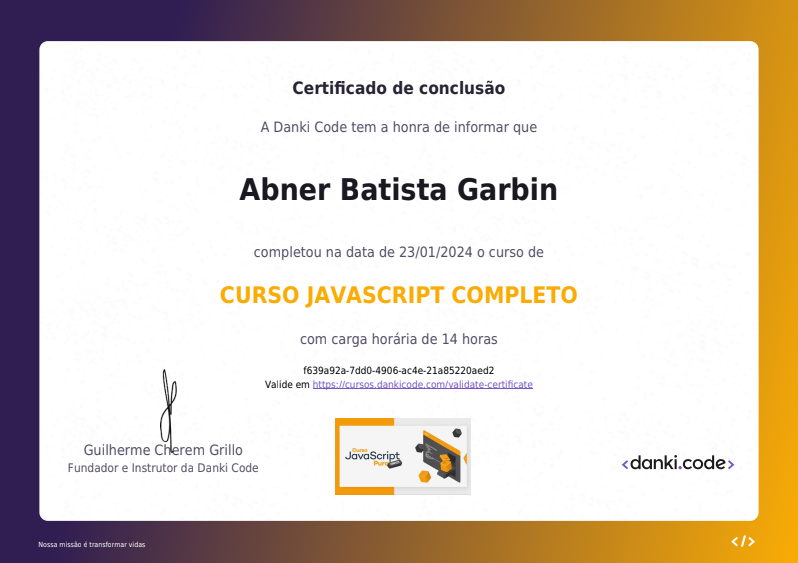
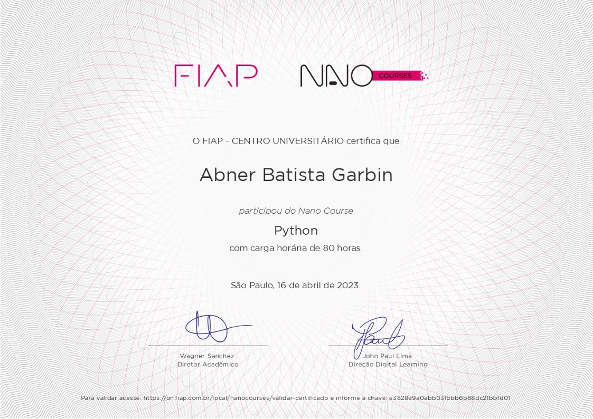
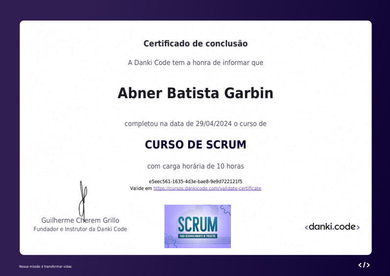

Engenharia de Qualidade de Software
Escola Britânica de Artes Criativas e Tecnologia
QA Engineer | Quality Engineering
Sou
Uno minha experiência em desenvolvimento de software à engenharia de qualidade para identificar riscos, prevenir falhas e contribuir para entregas mais confiáveis.
// sobre mim
Sou QA Engineer. Uno minha experiência em desenvolvimento de software à engenharia de qualidade para identificar riscos, prevenir falhas e contribuir para entregas mais confiáveis.
Minha experiência em desenvolvimento amplia minha visão técnica sobre aplicações, integrações e os impactos de cada mudança.
Acredito que a qualidade se constrói ao longo de todo o desenvolvimento, combinando prevenção de riscos, visão técnica e atenção a quem usa o produto.
// formação
Escola Britânica de Artes Criativas e Tecnologia
Estácio de Sá
// cursos & certificações

Estudo técnico focado em lógica de programação, orientação a objetos e desenvolvimento em Java, com ênfase em estrutura, manutenção e raciocínio de software.

Conteúdo voltado para desenvolvimento front-end com JavaScript, incluindo interações web, manipulação de interface e lógica de comportamento em aplicações digitais.

Abordagem prática em Python para automação, organização de código e desenvolvimento de soluções com maior clareza, eficiência e capacidade de manutenção.

Fundamentos de metodologias ágeis, trabalho em equipe e entregas incrementais, com foco em planejamento, colaboração e desenvolvimento orientado ao valor do cliente.

Aprofundamento em SQL para consultas, análise de dados e modelagem de informações, com foco em consistência, performance e suporte à tomada de decisão.
Estudo de serviços cloud, infraestrutura e deploy, com foco em disponibilidade, escalabilidade e operação de ambientes mais confiáveis e preparados para produção.
// base técnica
// qualidade de software
Identificar riscos com antecedência e prevenir falhas fortalece a confiabilidade do produto e a experiência de quem usa.
A importância de conhecer o ciclo de desenvolvimento está na capacidade de avaliar impacto de mudanças, identificar riscos e fortalecer a qualidade do produto.
A qualidade conecta comportamento do software, riscos do produto e impacto das mudanças para evitar que falhas cheguem a quem usa.
// contato